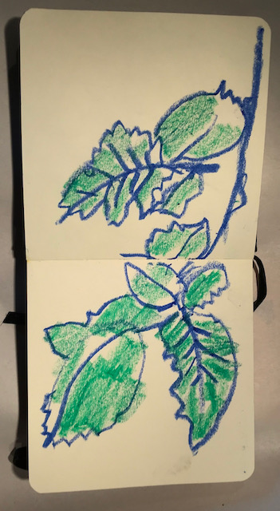

this is Jeudi 9 juin, it is cloudy weather today
there is an illustration on this page, there is text, I reversed the heading element with JavaScript code, I started exploring how a HTML document and JavaScript code interact. I am using DevDocs and HTMLElement.input event as a starting point.
The idea is to learn like we learn in jiu jitsu. I would gradually learn the triangle over three-four months. Sporadical learning. Yes, I want to explore this further. How do I switch between tabs open on VS Code? This is my code learning. How do I display a JavaScript code snippet in the browser, that I am learning about, with something with TypeScript and JSDoc and perhaps with Ruby and Java added? I didn’t use to take the time to stay with these little learnings in past. To value solving an easy algorithm and learning something simple and not craving for. Perhaps craving for the simple. I am learning about how to interact JavaScript and HTML - document.children. Listening to jazz for joy. To make a point of reading and trying to understand code. Similar to how a climber reads a a route before attempting to understand it.